Te sentirás segura
para expresarte
Un espacio donde puedes ser tú misma, compartir lo que sientes y crear sin miedo a ser juzgada.
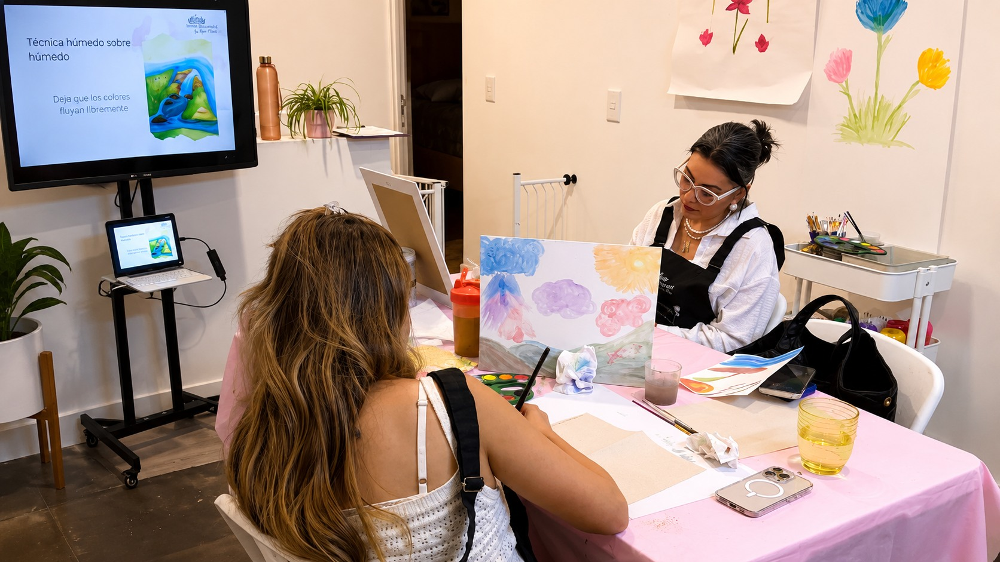
CURSO PRESENCIAL
Un espacio para pausar, crear y volver a encontrarte contigo misma a través del arte.
Una experiencia íntima donde la pintura, la reflexión y el acompañamiento crean un espacio seguro para escucharte, expresar lo que sientes y reconectar con tu esencia.
RESERVA TU LUGAR ♡Más que un taller, es un espacio diseñado para que puedas bajar el ritmo, crear con calma y reconectar contigo misma.
Un espacio donde puedes ser tú misma, compartir lo que sientes y crear sin miedo a ser juzgada.

Cada ejercicio está pensado para ayudarte a conectar con tus emociones desde la creatividad.

Compartirás este camino con un grupo pequeño de mujeres que también buscan reconectar consigo mismas.
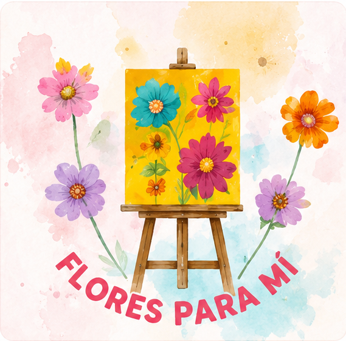
Aprende a elegirte sin culpa, trabaja tu autoestima y amar tu propio proceso.
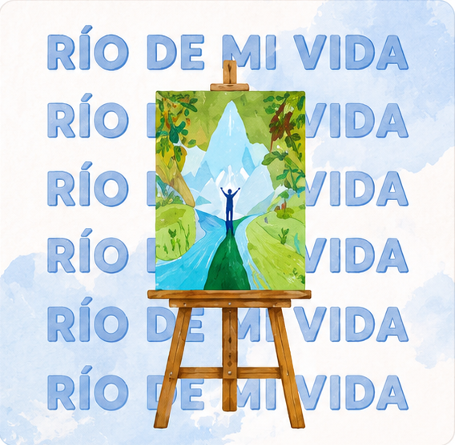
Sana tu historia y resignifica lo que has vivido.
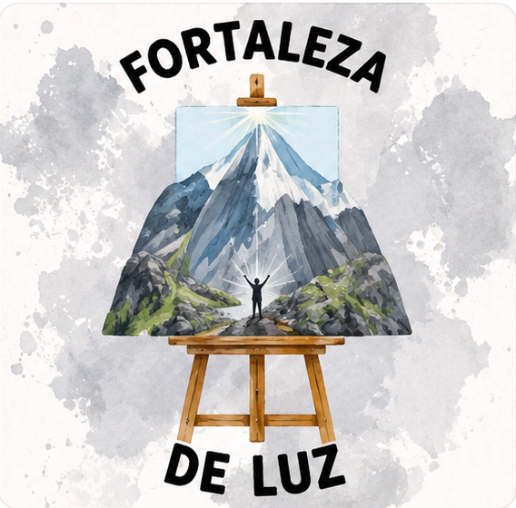
Reconoce tu fuerza interior integrando tus luces y sombras.
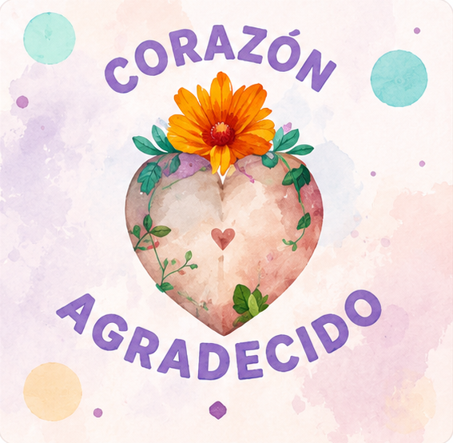
Conecta con la gratitud, vive en plenitud y en tiempo presente.
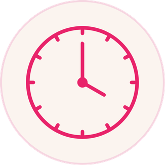
Tiempo suficiente para vivir cada sesión sin prisas.
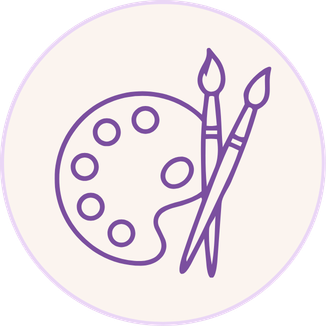
Solo llega con ganas de regalarte este espacio.
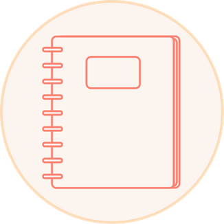
Para integrar lo vivido antes, durante y después del curso.
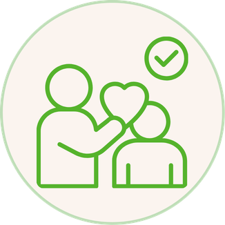
Una guía presente y amorosa durante todo tu proceso.
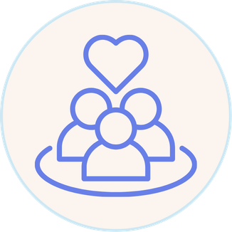
Un espacio íntimo que favorece la confianza y la conexión.
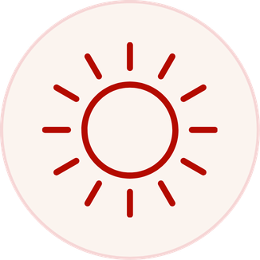
Para seguir acompañada incluso después del curso.
Próximas ediciones:
Lomas Verdes,
Naucalpan de Juárez,
Estado de México.
A 5 min de Periférico Norte.
Jueves
de 6:00 a 9:00 pm
Sábados
de 11:00 am a 2:00 pm
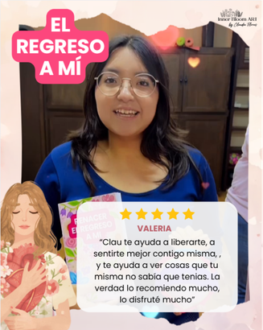
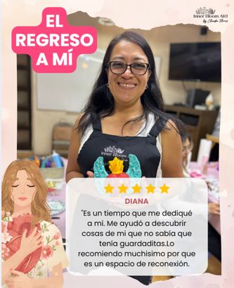
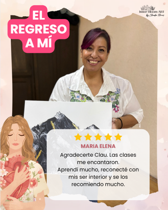
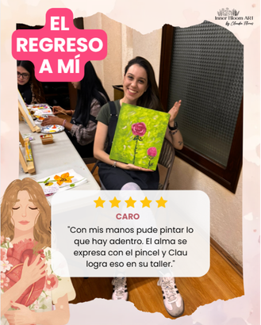